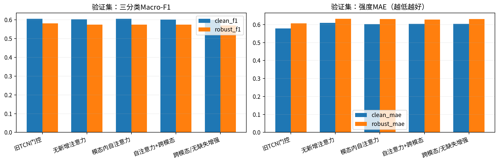
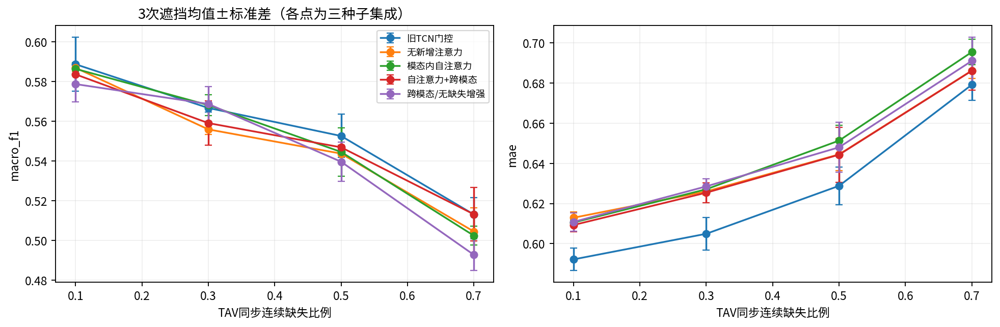
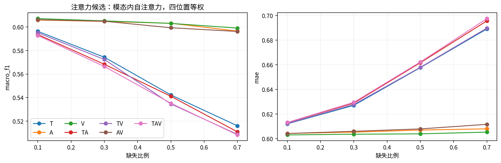
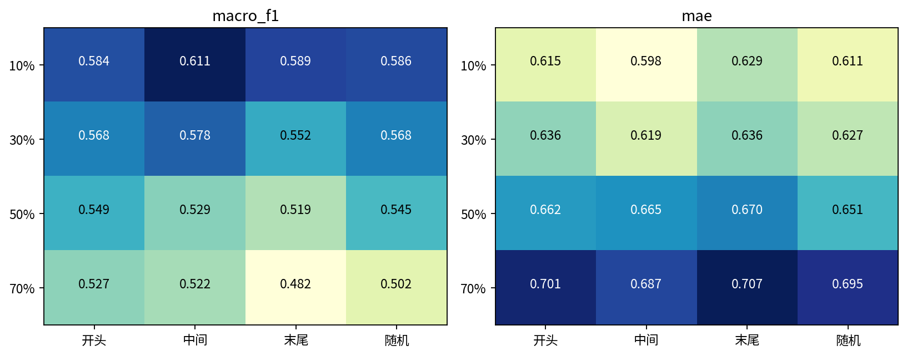
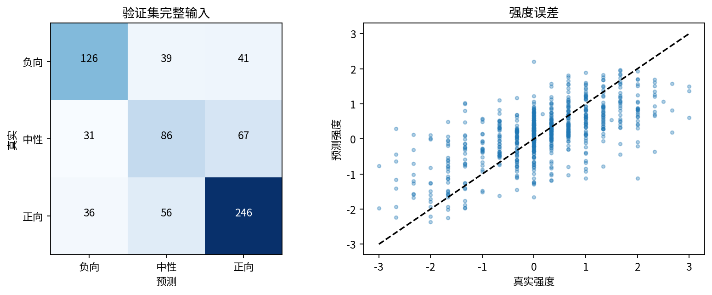
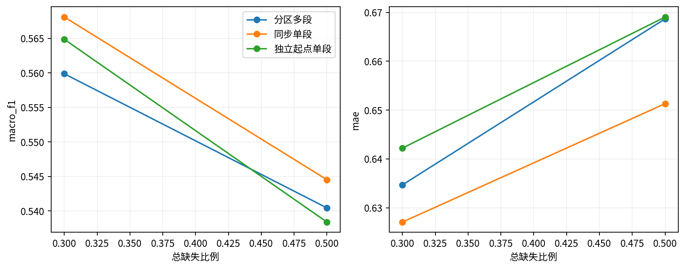
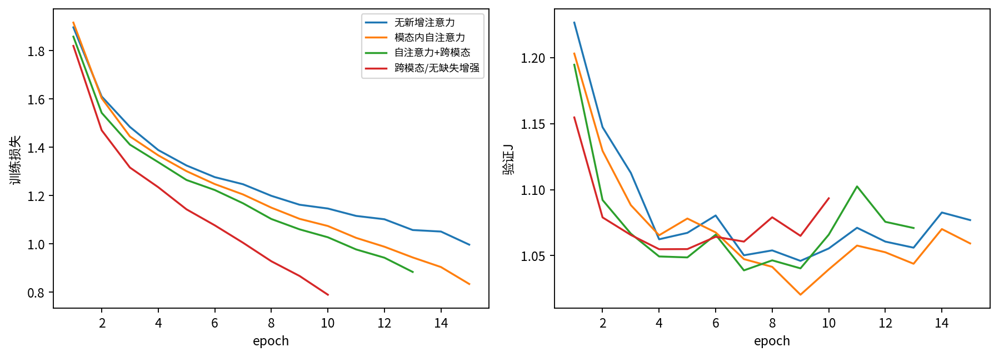
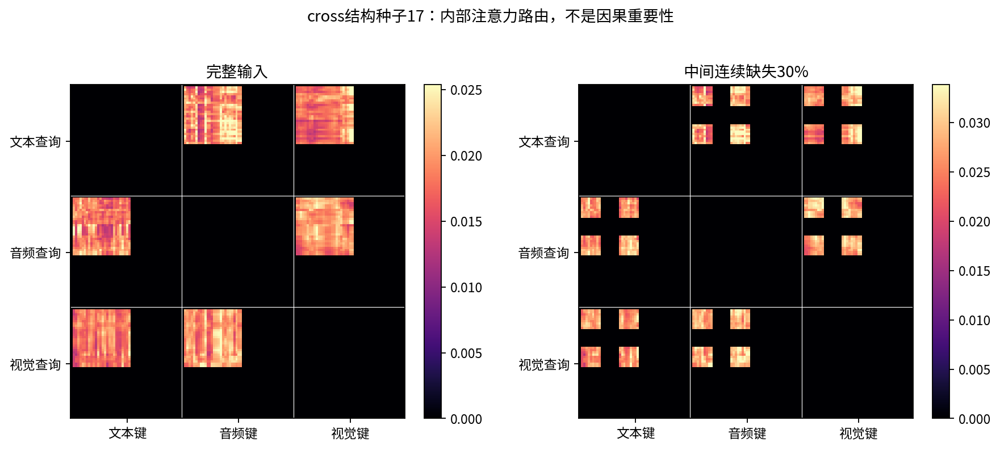

问题二 · 注意力机制实验
未通过旧版全部七项参考门槛，不建议仅依据本轮结果替换旧版。未通过项：clean_mae, robust_f1, robust_mae, strong_positive。
候选模态内自注意力
验证Macro-F10.605
验证MAE0.603
缺失平均F10.575
217次验证输入实现，三种子；注意力矩阵仅展示内部路由，不是因果解释。
| model |
J |
clean_accuracy |
clean_f1 |
clean_mae |
clean_pearson |
neutral_recall |
strong_negative_mae |
strong_positive_mae |
robust_f1 |
robust_mae |
| old_gated |
0.9926 |
0.6346 |
0.6055 |
0.5784 |
0.6827 |
0.4076 |
1.0426 |
1.0198 |
0.5811 |
0.6067 |
| pool |
1.0278 |
0.6264 |
0.6029 |
0.6093 |
0.6411 |
0.4457 |
1.0595 |
1.0737 |
0.5737 |
0.6326 |
| self |
1.0181 |
0.6291 |
0.6046 |
0.6030 |
0.6510 |
0.4674 |
1.0109 |
1.0701 |
0.5745 |
0.6302 |
| cross |
1.0254 |
0.6264 |
0.6016 |
0.6039 |
0.6435 |
0.4402 |
1.0939 |
1.0536 |
0.5737 |
0.6283 |
| cross_clean |
1.0298 |
0.6236 |
0.5989 |
0.6039 |
0.6435 |
0.4402 |
1.0541 |
1.0675 |
0.5699 |
0.6306 |
附件3候选预测
| 样本 | 极性 | 强度 | 种子标准差 |
|---|
| 附件3_01 | negative | -1.3167 | 0.1690 |
| 附件3_02 | neutral | 0.0141 | 0.2343 |
| 附件3_03 | neutral | 0.1157 | 0.0519 |
| 附件3_04 | positive | 0.3392 | 0.0901 |
| 附件3_05 | negative | -1.9651 | 0.0476 |
| 附件3_06 | positive | 1.0722 | 0.2663 |
| 附件3_07 | neutral | -0.1070 | 0.1457 |
| 附件3_08 | negative | -0.1828 | 0.2381 |
| 附件3_09 | positive | 1.0166 | 0.0299 |
| 附件3_10 | neutral | -0.1220 | 0.1278 |
| 附件3_11 | neutral | 0.0292 | 0.1102 |
| 附件3_12 | positive | 0.7486 | 0.4234 |
| 附件3_13 | positive | 0.4148 | 0.0769 |
| 附件3_14 | negative | -0.6785 | 0.2032 |
| 附件3_15 | positive | 0.6813 | 0.1063 |
| 附件3_16 | positive | 1.5688 | 0.1450 |
| 附件3_17 | neutral | -0.0150 | 0.0635 |
| 附件3_18 | positive | 0.3177 | 0.0718 |
| 附件3_19 | negative | -0.3112 | 0.0401 |
| 附件3_20 | neutral | 0.0716 | 0.3268 |
| 附件3_21 | positive | 0.3815 | 0.1668 |
| 附件3_22 | positive | 0.1941 | 0.0815 |
| 附件3_23 | positive | 0.3779 | 0.0891 |
| 附件3_24 | positive | 0.3568 | 0.2688 |
| 附件3_25 | positive | 0.2208 | 0.1797 |
| 附件3_26 | positive | 0.5884 | 0.1538 |
| 附件3_27 | positive | 0.9098 | 0.0589 |
| 附件3_28 | positive | 0.2608 | 0.2173 |
| 附件3_29 | positive | 0.7742 | 0.1490 |
| 附件3_30 | neutral | 0.6283 | 0.0888 |

01_comparison
02_missing_ablation
03_modality_duration
04_position
05_validation_errors
06_shape
07_training
08_attention_routing